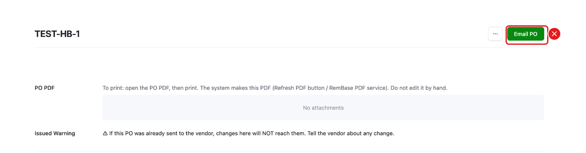
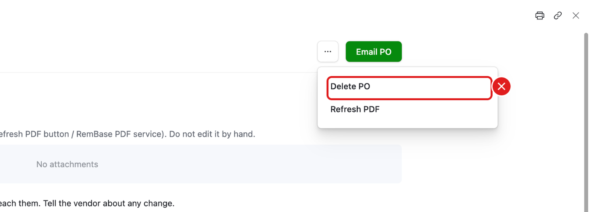
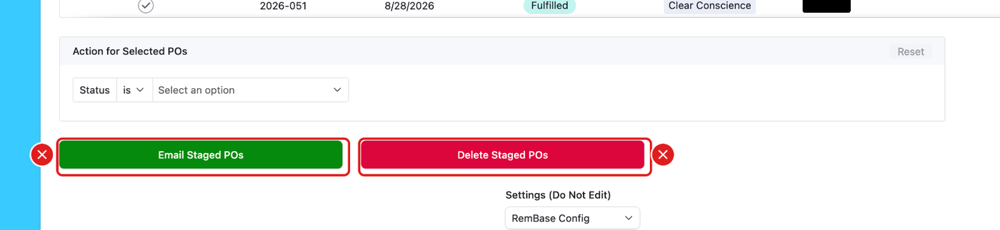
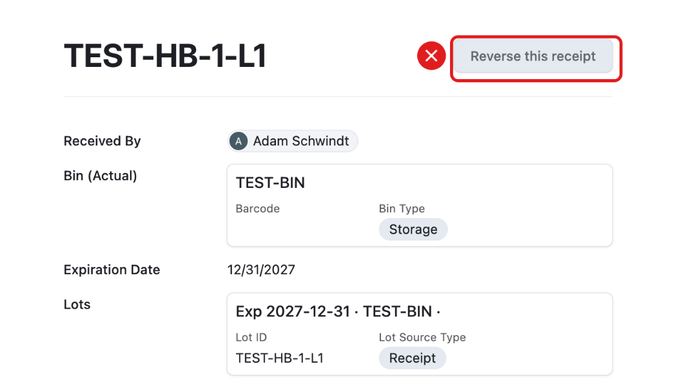

Do not press any button on this page.
These buttons email vendors, move real stock or delete records. If you think one is needed, ask Adam or Becca first.
Email PO

It emails the PO to the vendor.
Delete PO

It is inside the … menu on a PO. It deletes the PO.
Email Staged POs and Delete Staged POs

They are at the bottom of the Purchase Orders list. They email or delete every staged PO at once.
Reverse this receipt

It undoes a receipt. If a receipt is wrong, ask Becca.
Production buttons
- Finish Run on a real run – moves stock and adds units to the next Amazon shipment. (On your own practice run it is OK.)
- Reverse Run – undoes a finished run.
See Production Run.
Planning buttons (Becca only)
- Commit PO Planning and Clear PO Planning Selections
- Commit Run Planning and Clear Run Planning
Anything else
- Delete on any record.
- Create “…” in a part list. It makes a new part that planning leaves out. Ask Becca to add the part.
- New Part – Becca or Adam only. See Inventory.
- Add found item in a count.
When in doubt: stop and ask.
Real buttons: be careful (Amazon shipments)
The Amazon buttons on FBA Shipment → Next shipment are not on the do-not-press list. Anyone on the team may press them for a real shipment. They are real, not practice:

- Create plan, Refresh options, Re-check, Get prices again, Cancel plan, Mark as sent
- Confirm placement and Confirm freight cost money. Check the price first.
- Press once, then wait until Inbound Pending is empty.
See FBA Shipment for what each button does.